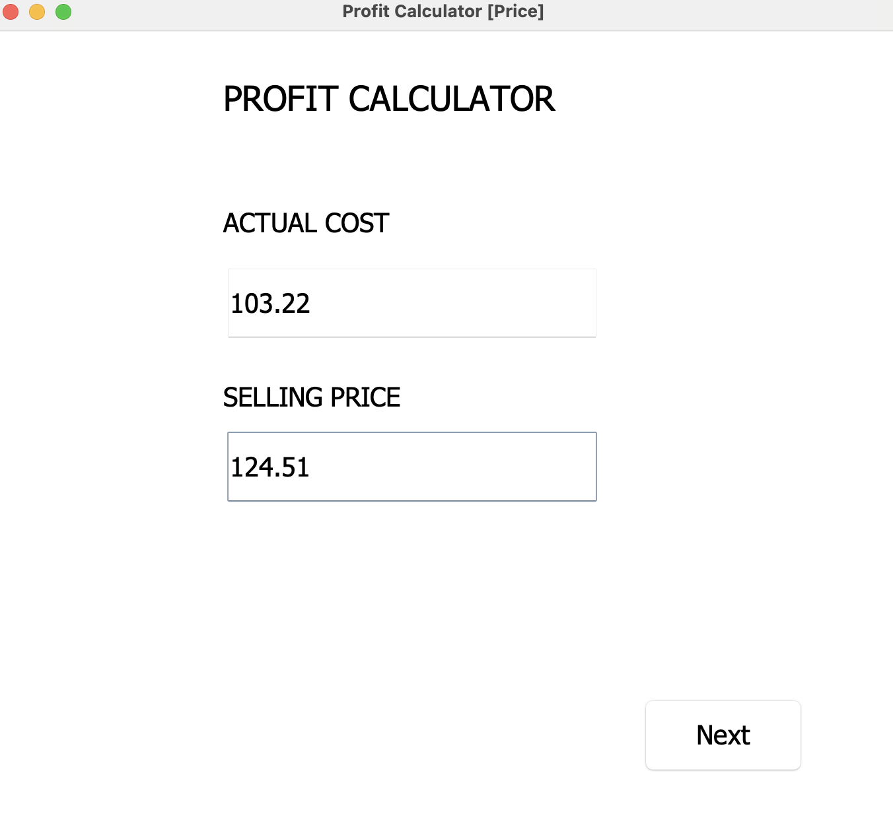
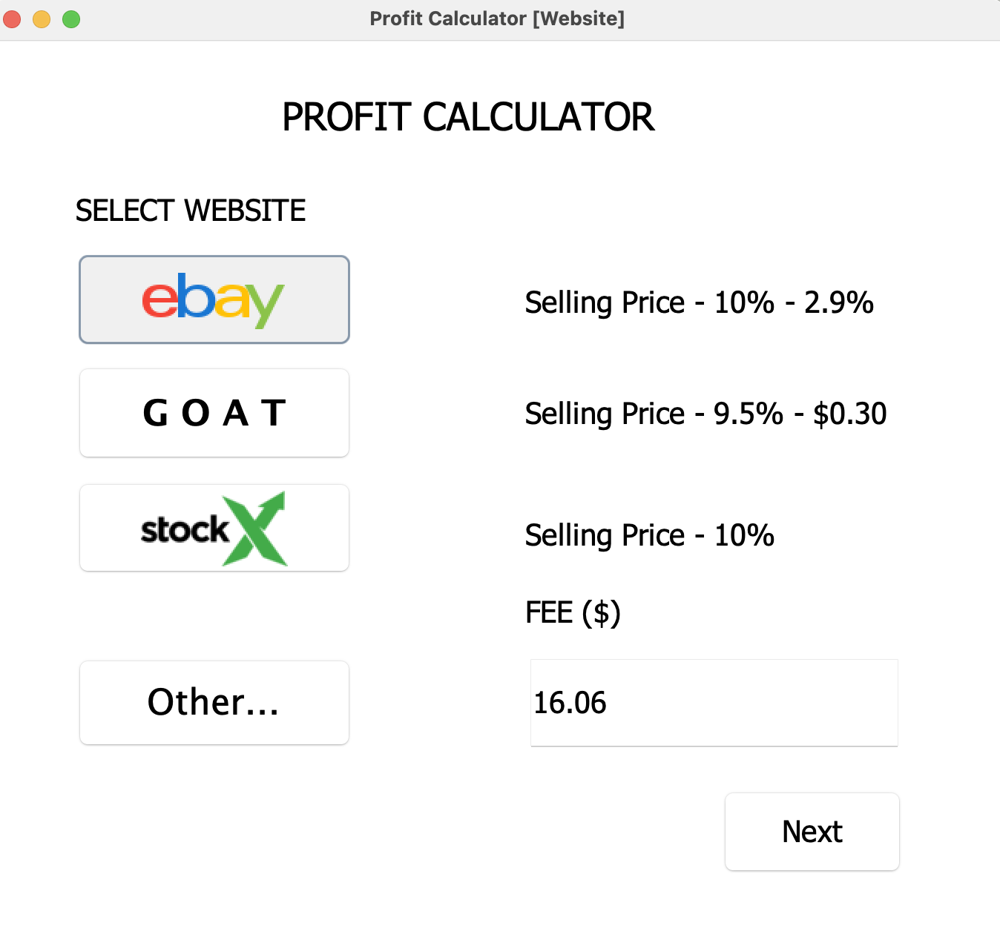
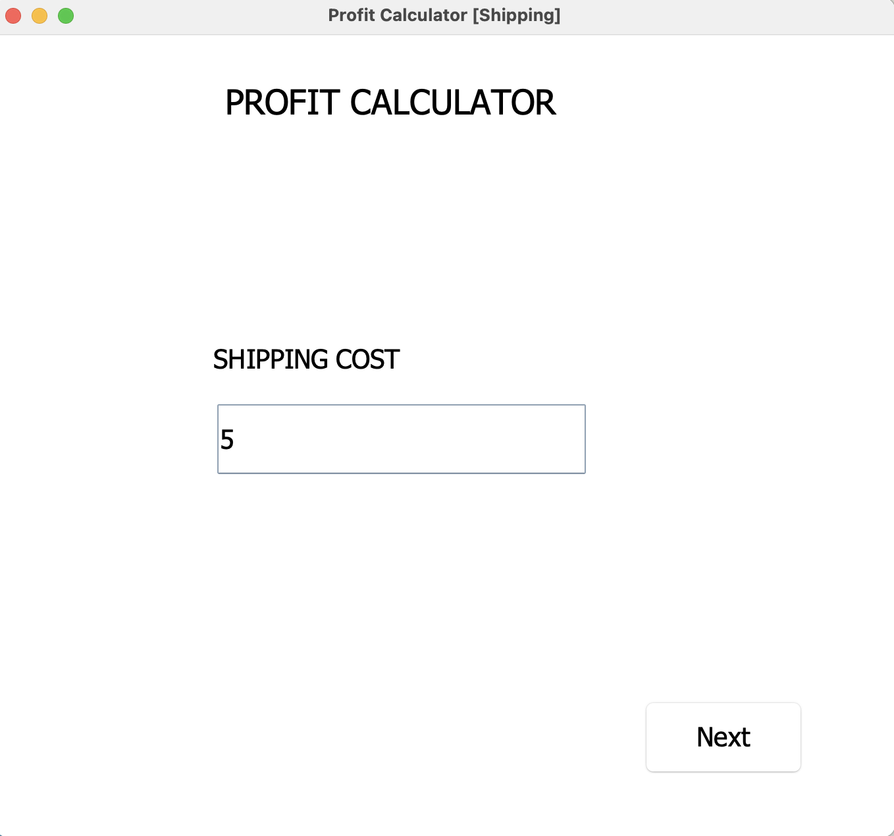
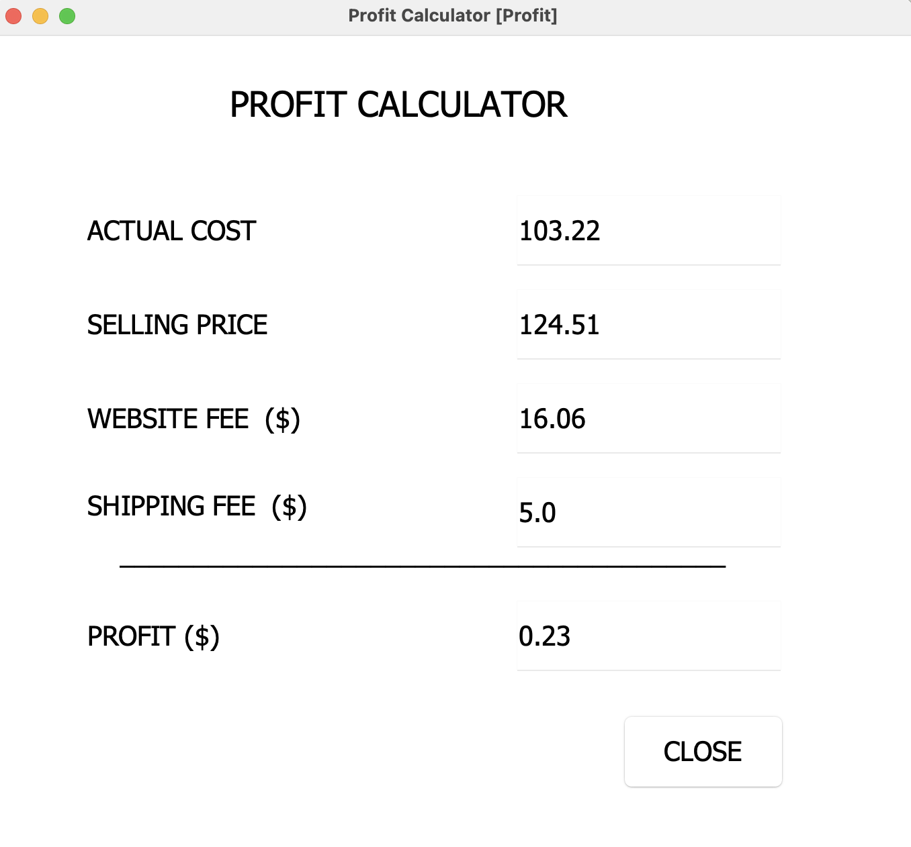

A research project I am working on with Chapman University Professor Alexander Kurz. We are focusing on finding an effective way to Decentralize Moderation, and implement it in our own Slack-based social media. We are currently seeking funding, see the proposal here.
A collaboration project with local company LayerJot to create an AI handwashing analyzer using Computer Vision and ML. Here on GitHub. The project recently won Chapman University's GCI Showcase against 53 other teams. To read more about GCI and our project, check out Chapman News
A personal project I created in High School to assist me with calculating fees for my Shoe Reselling business. Can be found here on GitHub.
   